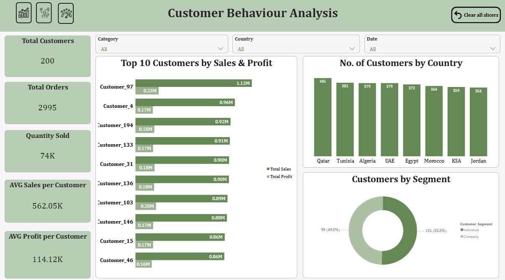

My Project

Sales & Customer Analysis Dashboard
Developed an interactive Power BI dashboard to analyze sales performance, profit trends, and product distribution across multiple countries. The dashboard provides insights into revenue, profit margins, customer behavior, and product performance to support data-driven decision making.

Customer Behavior Analysis
Analyzed customer purchasing patterns using Power BI to identify top customers, sales contribution, and segmentation. The dashboard highlights customer distribution across countries and helps businesses understand buying behavior.

Product & Category Analysis
Product and Category Analysis aims to evaluate the performance of different products and categories, identify best-selling items, and highlight areas for improvement. Insights from this analysis support better business decisions and revenue growth.